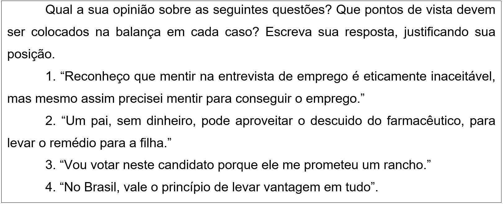

CAPÍTULO 1: TÍTULO RELACIONADO AO CONTEXTO DA INDÚSTRIA METALÚRGICA
Fato: P.S.N é gerente de compras de insumos em uma empresa no segmento metalúrgico.
Ele costuma adotar os seguintes critérios na hora de selecionar um fornecedor
- Econômicos - na maioria das vezes, os critérios econômicos são baseados nos custos. A avaliação geralmente envolve análise de valor, que implica comparar os custos e os benefícios potenciais advindos da compra;
- Qualidade e Serviços - são pontos decisivos quando os compradores operam com estoques reduzidos. A qualidade não significa somente produtos livres de defeitos ou esteticamente agradáveis. Além disso, devem incluir serviços voltados a ajudar o comprador organizacional e resolver seus problemas;
- Análise da parte vendedora – trata-se de um procedimento no qual o comprador classifica seus fornecedores segundo critérios como qualidade, preço, tecnologia, etc., buscando com isso criar uma lista (ranking) de fornecedores potenciais.
Acontece que seu filho recebe diagnóstico de doença grave, mas a lista de espera no hospital é grande. Então numa conversa informal com colegas, descobre que uma das empresas que está concorrendo para uma grande compra de insumos que P.S.N precisa fazer também atende um hospital e tem grandes relacionamentos lá dentro. Entretanto, essa empresa XYZ é a última classificada nos critérios de qualidade, preço e tecnologia.
No contato que P.S.N faz com o vendedor de XYZ, ele comenta do problema do filho. O vendedor de XYZ, muito esperto, oferece ajuda para P.S.N. Se a compra for concretizada, ele arranja que hospital fure a fila e atenda seu filho rapidamente.
de espera previamente existente.
O que P.S.N deve fazer? Como pai, ele sente o dever de ajudar o seu filho, em primeiro lugar, “dane-se o resto”; porém, ele é uma pessoa ética e pensa “não posso prejudicar a empresa e colocar em risco o emprego de tanta gente e, além disso, todos confiam em mim”. O que você faria, se estivesse numa situação semelhante a de P.S.N? Qual seria seu argumento, suas razões para sustentar a decisão tomada?
A filosofia adota uma atitude crítica em relação a determinadas crenças que foram previamente consideradas verdadeiras. A ética é a área da filosofia que faz o mesmo em relação a crenças relacionadas com o certo e o errado, com o bom e o mau, com o que se deve e com o que não se deve fazer.
A ética ou filosofia moral é a área “prática” da filosofia. Ela trata de questões importantes da vida, que dizem respeito ao modo como devemos viver e tratar as outras pessoas. A ética ou filosofia moral é a tentativa de pensar sobre o certo e errado, bom e mau.
Contextualizando
Mapa mental
Você sabe o que é um mapa mental? É uma ferramenta gráfica, um esquema, que nos ajuda a pensar sobre um tema estabelecendo conexões.
Como no exemplo abaixo:
Para elaborar um que possa ser útil para pensar sobre o foco desta unidade, tome uma folha em branco e escreva no centro dela a palavra “ÉTICA”. Provavelmente, você já ouviu essa palavra em diversas ocasiões. Lembra onde ou em que situações essa palavra é usada?
Em seguida, escreva palavras ou frases que você relaciona ou associa com a palavra “ética” e vá estabelecendo relações entre essas palavras através de setas, linhas, etc. Você pode ir acrescentando novas palavras, sempre relacionando-as com outras que você já escreveu na folha. Procure fazer todas as conexões que você conseguir.
Quantas palavras, ideias ou questões você consegue relacionar com a palavra “ética”? Repare que não há um esquema correto.
(Re)construindo conhecimentos
1) A bússola do “certo / errado”: a consciência moral
Para começar nosso entendimento da ética ou da moral, vamos imaginar que nós, seres humanos, nascemos equipados com uma espécie de bússola moral. Essa bússola aponta para o BEM: aquilo que se deveria fazer do ponto de vista moral. Sua função seria indicar o que é CERTO ou ERRADO do ponto de vista moral. Se isso acontecesse de fato, a bússola de seus conhecidos, amigos e familiares apontaria na mesma direção da sua? Leia as situações propostas e use sua bússola moral interna para responder às questões apresentadas.
1. P.P.M.S é a melhor vendedora em uma loja de grife e mantém agenda com os melhores clientes da loja desde seu primeiro dia de trabalho, há pelo menos 12 anos. No entanto, funcionários em treinamento descobriram que PPMS está levando roupas da loja para usar no final de semana e devolve na segunda-feira. O que seria correto fazer nessa situação? Justifique sua resposta.
2. O que você pensa do seguinte argumento: “É certo que vou fazer algo errado. Mas tanta gente faz coisa muito pior...Então, por que não fazer?” Justifique sua resposta.
3. As toalhas do banheiro do hotel em que você está hospedado são muito bonitas e de boa qualidade. Você coloca uma delas na mala e a leva para casa?
A figura da bússola interna da moral serve para ilustrar o que os filósofos chamam de CONSCIÊNCIA MORAL.
Agora, assista às videoaulas:
2) Por que devo ser ético?
2.1 O Anel de Gyges
O Anel de Gyges é uma lenda grega, narrada no livro A República, pelo filósofo Platão (século 5º antes da nossa era). Leia o texto abaixo e procure interpretar a lenda.
O Anel de Gyges
Gyges era um pastor que encontrou no corpo de um homem morto um misterioso anel. Então, num dia em que foi chamado pelo rei, juntamente com os outros pastores, mexeu no seu anel e, maquinalmente, girou a pedra. Grande foi sua surpresa ao constatar que esse simples gesto o tornava invisível! Os outros pastores falavam dele como se estivesse ausente e ninguém notava sua presença.
Gyges girou novamente a pedra e reapareceu aos olhos de todos.
Nos dias seguintes, refez a experiência e, então, ficou convencido do poder mágico de seu anel. Imediatamente, sua cabeça foi invadida por más intenções. Ele começou a sentir inveja do rei e das suas riquezas. Então, voltou ao palácio, onde tentou seduzir a rainha.
Depois, aproveitando-se de sua invisibilidade, matou o rei e se apossou do trono.
Platão, o filósofo que conta essa história, propõe a seguinte questão: “Se tivéssemos o anel de Gyges e a certeza de que nunca seríamos punidos, aproveitaríamos para roubar, matar e fazer tudo o que bem quiséssemos? ” Em outras palavras, será que evitamos praticar o mal porque pensamos que é mal, ou será por medo das punições, por receio do castigo?
Fonte: PIQUEMAL, M. e LAGAUTRIÈRE, P. Fábulas Filosóficas. São Paulo: Companhia Editora Nacional, 2007. p. 76-77.
2.2 Ética e religião
Uma ideia conhecida é que a vida correta consiste na obediência aos mandamentos de Deus. Nesta concepção, Deus definiu as regras a que devemos obedecer, recompensando aqueles que as cumprirem e punindo aqueles que as quebrarem.
Se isto fosse verdade, poderíamos facilmente responder ao desafio: seríamos morais porque se não fossemos seríamos punidos por Deus. Mesmo que, segundo Giges, tivéssemos o poder da invisibilidade, estaríamos sempre sujeitos ao julgamento divino, e não poderíamos, em última análise, ser bem-sucedidos a fazer o que quiséssemos. Segundo um cenário conhecido, a boa vontade passará a eternidade no céu, enquanto a perversidade irá para o inferno. Assim, qualquer benefício que pudesses ganhar ao agir mal seria apenas temporário. A longo prazo, é a virtude que compensa.
Podemos distinguir entre a) a teoria dos mandamentos divinos como uma teoria ética abrangente e b) a pretensão de que Deus recompensa os virtuosos. Olhemos de forma breve para a teoria.
A teoria dos mandamentos divinos diz que uma ação moralmente correta é uma ação ordenada por Deus. Para começar, podemos observar que se levantam inúmeras dificuldades se levarmos esta tese a sério. Como podemos saber o que Deus manda? Claro que há pessoas que afirmam ter falado com Deus e que se ofereceram para nos transmitir as suas instruções. Só que não são os indivíduos mais fiáveis. Ouvir vozes tanto pode ser um sinal de esquizofrenia ou megalomania como um caso de comunicação divina.
2.2 A balança
Você já conhece a imagem de uma bússola imaginária que indica o que é certo e o que é errado, no plano moral, e sabe também que essa bússola representa nossa consciência moral. Podemos supor que todos possuem uma bússola que indica o que deve ser feito do ponto de vista moral (mesmo que essas bússolas não apontem na mesma direção).
Mas quem disse que devemos agir de acordo com essa bússola?
Vamos introduzir agora uma nova imagem: uma balança. Esta balança imaginária vai permitir que pesemos o ponto de vista ético em relação a outros pontos de vista. A balança vai dizer o que devemos fazer após levar em consideração o conjunto dos pontos de vista.
Na perspectiva da bússola, perguntamos: “O que recomenda a consciência moral? O que é certo fazer?”. Na perspectiva da balança, perguntamos:
“Que peso devo dar à ética em minha vida? Por que deveria renunciar aos meus desejos e interesses para ser ético?”

2.3 Subjetivismo e Relativismo Cultural
O Subjetivismo e o Relativismo Cultural são duas maneiras de pensar a ética (o certo o e errado) que não concordam que a bússola de todos aponte na mesma direção. O Subjetivista defende que cada ser humano tem sua bússola particular e “certo” e “errado”, “bom” ou “mau” são palavras que se referem ao que o sujeito gosta ou aprova. Dizer que “o aborto é errado” é o mesmo que dizer “eu não aprovo o aborto”.
Já o Relativista não diz que os princípios éticos dependem apenas dos sentimentos pessoais, mas afirmam “bom” e “mau” são relativos a cada cultura. “Bom” é o que é “socialmente aprovado” em determinada cultura. Nossos princípios morais descrevem convenções sociais e devem ser baseados nas normas de nossa sociedade.
O subjetivista e o relativista concordam numa coisa: não há verdades objetivas em ética – não há uma bússola que possa medir o certo e o errado para toda a humanidade.
2.4 Jogo: o dilema do prisioneiro
Dois suspeitos, A e B, são presos numa operação da polícia federal, que não tem provas suficientes para condená-los, mas, separando os prisioneiros, oferece a ambos o mesmo acordo: se um dos prisioneiros, confessando, testemunhar contra o outro e esse outro permanecer em silêncio, o que confessou sai livre, enquanto o cúmplice silencioso cumpre 10 anos de sentença. Se ambos ficarem em silêncio, a polícia só pode condená-los a 6 meses de cadeia cada um. Se ambos traírem o comparsa, cada um leva 5 anos de cadeia. Cada prisioneiro faz a sua decisão sem saber que decisão o outro vai tomar, e nenhum tem certeza da decisão do outro. A questão que o dilema propõe é: o que vai acontecer? Como o prisioneiro vai reagir?
Vamos analisar essa situação?
Para alguns filósofos, no fundo somos todos egoístas e isto não significa que somos maus – cada ser humano segue seus próprios interesses. Mas então porque seremos éticos? Por que precisamos cooperar com os outros e agirmos de maneira ética no convívio social?
Outros filósofos vão dizer para olhar para o Dilema do Prisioneiro: se você só age pensando em levar vantagem o tempo todo e não age pensando em cooperar com outro, a longo prazo, você se dá mal. A busca dos próprios interesses é como o jogo do prisioneiro: se eu sou egoísta (delato), só ganho nas primeiras rodadas (se o outro prisioneiro não delata). A partir da segunda rodada desse jogo, ninguém confia em ninguém, os outros começam a ser egoístas também e todos nos damos mal (somos condenados a 5 anos). A melhor opção é sermos cooperativos (éticos) – ninguém nega.
3) A distinção ÉTICA e MORAL
Moral e ética são conceitos geralmente empregados como sinônimos, ambos se referem a um conjunto de regras de conduta consideradas obrigatórias. As palavras “ética” (do grego) e “moral” (do latim) nomeavam o campo de reflexão sobre os deveres e a felicidade dos homens.
No entanto, nas reflexões modernas, faz-se uma diferença entre os conceitos.
a) Alguns filósofos pensam que a palavra “moral” deveria ser reservada para as normas que são dadas por uma determinada cultura (moral muçulmana, moral cristã, moral ocidental, etc.). As moralidades são códigos de normas que identificam, em cada comunidade, o que é certo ou errado fazer. A moral exprime os valores de uma determinada comunidade. Trata-se de um fenômeno social, toda cultura tem sua moralidade. Por sua vez, a palavra “ética” deveria ser empregada para a reflexão sobre a moral. Portanto, a ética seria mais filosófica, já que envolve a reflexão, ou seja, pensar e criticar os valores dados pela cultura.
b) Para outros pensadores, a diferença está em que a moral trata de responder à pergunta: “como devo viver?”, já à reflexão ética cabe responder à “que vida devo viver?”
Ação e reflexão
Aluno, a seguir vamos resolver algumas questões de vestibulares nas quais foram cobrados conteúdos de ética. Elas vão exigir de você uma leitura atenta – a interpretação textual é muito importante para poder resolver estas questões.
1) (Ufsm 2012) Tolstoi apelava para a moral por achar óbvio que o fato de gostarmos de uma obra de arte ou a apreciarmos de um jeito ou de outro era uma questão exclusivamente subjetiva. Qualquer tentativa de prescrever padrões objetivos de gosto está condenada ao fracasso. Mas havia um modo de julgar objetivamente uma obra de arte: quanto ao seu conteúdo moral. Assim, por exemplo, ao avaliar se um romance é bom ou ruim, estamos apenas manifestando as nossas opiniões. Mas quando indagamos se o romance transmite uma mensagem moralmente virtuosa, podemos chegar a uma conclusão com que todos os julgadores sensatos podem concordar. Esse argumento é importante, porque tem consequências para a subvenção pública da arte. Tolstoi achava injustificável subvencionar as artes se o valor delas estava apenas no prazer que proporcionavam. Por que subsidiar alguns prazeres, como a ópera e a dança, e não outros, como a bebida?
Considere as seguintes afirmativas:
I. Segundo o texto, o conteúdo moral de uma obra de arte é uma questão objetiva.
II. Segundo o texto, o conteúdo estético de uma obra de arte não é uma questão subjetiva.
III. Segundo o texto, o Estado deve subvencionar a bebida.
Está(ão) correta(s)
a) apenas I.
b) apenas II.
c) apenas III.
d) apenas I e II.
e) apenas II e III.
Somente a afirmativa I é correta. Segundo o texto, o conteúdo estético é uma questão subjetiva ("o fato de gostarmos de uma obra de arte ou a apreciarmos de um jeito, ou de outro, era uma questão exclusivamente subjetiva"). Já o conteúdo moral de uma obra de arte corresponde a uma questão objetiva ("Mas havia um modo de julgar objetivamente uma obra de arte: quanto ao seu conteúdo moral"). Por fim, a afirmação de que o Estado deve subvencionar a bebida não possui qualquer relação com o texto. Resposta A]
2) (Enem 2ª aplicação 2010) “A ética exige um governo que amplie a igualdade entre os cidadãos. Essa é a base da pátria. Sem ela, muitos indivíduos não se sentem “em casa”, experimentam-se como estrangeiros em seu próprio lugar de nascimento”.
SILVA, R. R. “Ética, defesa nacional, cooperação dos povos”. In: OLIVEIRA, E. R. (Org.). Segurança & defesa nacional: da competição à cooperação regional. São Paulo: Fundação Memorial da América Latina, 2007 (adaptado).
Os pressupostos éticos são essenciais para a estruturação política e integração de indivíduos em uma sociedade. De acordo com o texto, a ética corresponde a
a) valores e costumes partilhados pela maioria da sociedade.
b) preceitos normativos impostos pela coação das leis jurídicas.
c) normas determinadas pelo governo, diferentes das leis estrangeiras.
d) transferência dos valores praticados em casa para a esfera social.
e) proibição da interferência de estrangeiros em nossa pátria.
A alternativa A é a única correta, pois identifica o sentido correto da noção de ética para o autor, que não a restringe a preceitos normativos (alternativas B e C) e sim a relaciona com modos de viver. Na alternativa D é mal interpretado uso da expressão “em casa”, pois no texto ela tem sentido figurado, significando uma identificação com o lugar de nascimento, bem como a referência a estrangeiros na citação nada tem a ver com o que é afirmado na alternativa E.
3. (Enem 2011) O brasileiro tem noção clara dos comportamentos éticos e morais adequados, mas vive sob o espectro da corrupção, revela pesquisa. Se o país fosse resultado dos padrões morais que as pessoas dizem aprovar, pareceria mais com a Escandinávia do que com Bruzundanga (corrompida nação fictícia de Lima Barreto)
FRAGA, P. Ninguém é inocente. Folha de S. Paulo. 4 out. 2009 (adaptado).
O distanciamento entre “reconhecer” e “cumprir” efetivamente o que é moral constitui uma ambiguidade inerente ao humano, porque as normas morais são:
a) decorrentes da vontade divina e, por esse motivo, utópicas.
b) parâmetros idealizados, cujo cumprimento é destituído de obrigação.
c) amplas e vão além da capacidade de o indivíduo conseguir cumpri-las integralmente.
d) criadas pelo homem, que concede a si mesmo a lei à qual deve se submeter.
e) cumpridas por aqueles que se dedicam inteiramente a observar as normas jurídicas.
O texto publicado na Folha de São Paulo intitula-se “Ninguém é inocente” e se refere à ambiguidade inerente à moralidade, indicando o evidente distanciamento entre “reconhecer” e “cumprir” a norma moral. O princípio ético – a norma moral – resulta da idealização do comportamento, ou seja, ele postula o comportamento ideal, aquele que corresponde o que deveria ser. Resposta D
O que aprendi
• “Moral” e “Ética” são termos usados como sinônimos. A etimologia de ambas as palavras remete ao mesmo significado “costume”.
• Porém, a moral é um conjunto de regras de conduta admitidas em determinada época por um determinado grupo.
• Já a ética passa pela avaliação das regras de conduta de um determinado grupo. Mesmo que todos façam e concordem com determinada regra de conduta, a pessoa deve se perguntar se isso é ético. Na ética, não podemos seguir os outros cegamente. Devemos refletir por conta própria.
• A figura da bússola interna da moral serve para ilustrar o que os filósofos chamam de CONSCIÊNCIA MORAL.
• A teoria dos mandamentos divinos diz que uma ação moralmente correta é uma ação ordenada por Deus.
• O Subjetivista defende que cada ser humano tem sua bússola particular e “certo” e “errado”, “bom” ou “mau” são palavras que se referem ao que o sujeito gosta ou aprova.
• O Relativista não diz que os princípios éticos dependem apenas dos sentimentos pessoais, mas afirmam “bom” e “mau” são relativos a cada cultura. “Bom” é o que é “socialmente aprovado” em determinada cultura. Nossos princípios morais descrevem convenções sociais e devem ser baseados nas normas de nossa sociedade